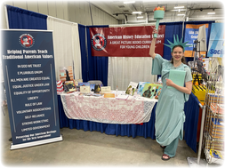
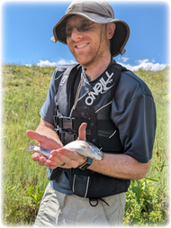
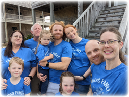
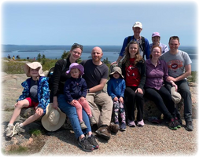
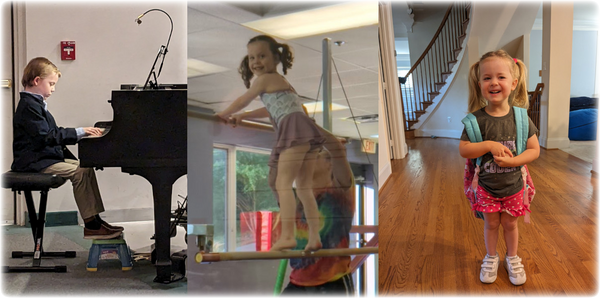
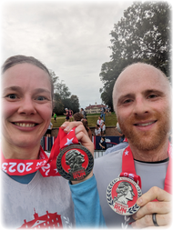
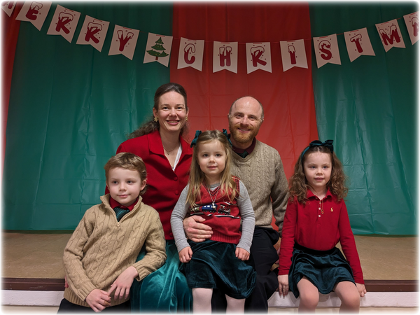

<link rel="stylesheet" href="css/article.css">
<style>
.signoff {
  margin: 15px 0 0 80px;
  margin-left: 80px;
}
.signoff p {
  margin: 0;
}
.signoff p.names {
  margin: 0 0 0 20px;
}
.benediction {
  font-weight: bold;
}
</style>
<title>Christmas Greetings 2023</title>
<main>
<div class="pad"></div>
<nav>{% include nav.html %}</nav>
<article>
<h1>Christmas Greetings 2023</h1>

<figure class="float-right">

<figcaption>Lady Liberty</figcaption>
</figure>

<p>We started the year off with Brie traveling to CA to spend three
precious days at the bedside of her grandmother.  Brie had great
visits with her grandmother and uncle (among many other family
members) made the more meaningful as both went to their reward later
this year.</p>

<figure class="float-left">

<figcaption>Steve caught his first fish</figcaption>
</figure>

<p>Steve still works (remotely) at Google and had business trips to CO
and CA this year.  Brie did less economic consulting this year, but
was busy with the American History Education Project (the non-profit
that Brie and Steve helped co-found).  AHEP received tax exempt status
from the IRS this year and had booths at four homeschooling
conferences (Brie got to present at three of them and interact with
families as the Statue of Liberty—so fun!).</p>

<figure class="float-right">

<figcaption>Outer Banks with Steve's family</figcaption>
</figure>

<p>Brie and Steve joined Cornerstone An Evangelical Free Church this
year and quickly got involved.  Brie volunteers with the Children's
ministries, Steve is in the choir, and both help lead a community
group.</p>

<figure class="float-left">

<figcaption>Acadia with Brie's family</figcaption>
</figure>

<p>We had several good family trips this year with highlights in Outer
Banks, NC (with Steve's family) and Acadia, ME (with Brie's family) as
well as visits to MD, PA, TN, and FL.  We joyfully welcomed Laura to
the family (completing our children's set of aunts) and then a nephew
in July (Brie was present for his birth!) and a niece in August.
Having niblings is fantastic!</p>

<figure>

<figcaption>Chris (7), Una (5), Emily (3)</figcaption>
</figure>

<figure class="float-right">

<figcaption>Patriot run at Mount Vernon</figcaption>
</figure>

<p>We are busy with many activities (Classical Conversations, Awana,
swimming, etc.) and we had several "firsts" this year: Christopher
started piano lessons, Una started gymnastics lessons, Emily started
preschool, all three went on their first camping trip and saw meteors,
and Brie and Steve ran their first race.  We continue to take
advantage of our location with many field trips and events: Air and
Space Museum (DC and Manassas), National Portrait Gallery, National
Archives, service at Arlington National Cemetery for a soldier killed
at the bombing of Pearl Harbor, and, of course, George Washington's
Mount Vernon!</p>

<p>We love hearing from and seeing you (so please come visit; we'd love
to host you) and hope you have a blessed 2024!</p>

<div class="signoff">
<p>Blessings,</p>
<p class="names">Team Hicks
<br>Brianna, Steve, Christopher, Una, and Emily</p>
</div>

<figure>

<figcaption></figcaption>
</figure>

</article>
<div class="pad"></div>
</main>


